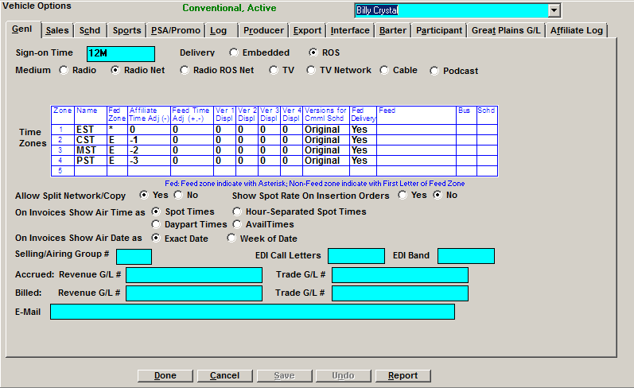
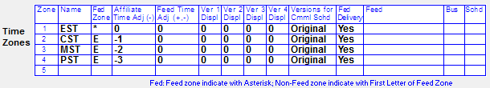
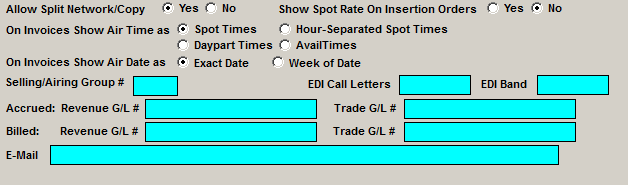

General

- “Sign On Time”: Leave the Sign On to its default
- “Delivery: Embedded/ROS”: If using the Cumulus or CBS Export Delivery method, this question determines whether pledges contain ROS or embedded spots, affecting what is sent to the Cumulus and CBS traffic systems and how spots are posted
- The default setting in the Vehicle screen is ROS
- The method defined here will be reflected on the Affiliate Pledge. The Delivery method can be changed on the pledge itself, by toggling to the chosen method in the D column
- Both ROS and Embedded spots (that are pledged to be carried) will be sent to the station website. When station personnel generate the Cumulus or CBS export from the web, it will only include the ROS spots
- ROS posted information will be imported into the Electronic Affidavit system, while Embedded spots must be manually posted
- “Medium”: Indicate whether the vehicle is a network, station, or podcast. The podcast option is used with the Site Options setting “show audio type on proposal/order” to make the audio type appear on contract reports, insertion orders, invoices, and L87 (a log format for use with Podcast vehicles). (On version 8.1 and above, the podcast option is labeled “Podcast/Ad Server”.)
- Remote Export: When the Remote Export feature is enabled, there will be three choices appearing here: Insertion Order, Log, and None. Select “Log” to have the event and spot export file get created during the log generation process.
- Ownership: This option is only available on version 7.1 and above. The default setting is “Owned-Network”, and vehicles set to “Owned-Network” will work the same as before. The ownership setting can affect the rules for acquisition costs and average spot prices for a contract line using this vehicle.
- Owned-Network: vehicles set to Owned-Network will work the same as before the ownership feature was added.
- Owned-Station: When a vehicle is set to the Ownership setting of "Owned-Station", a check is performed when saving a contract to verify that for any line using that vehicle, the acquisition cost is equal or lower than the average spot rate. If the acquisition cost is greater than the average spot rate for a line or for multiple lines (for the Owned-Station vehicle), a message will appear during the Save process that reads "The acquisition cost may not exceed the spot rate as in Line [number]". Before the contract can be saved, the problem line must be corrected by either editing the acquisition cost or the average spot rate. Also, when entering package overrides, it’s possible to propagate override changes to hidden lines that ignore the hidden line daypart restrictions.
- Unowned-Network: The average spot rate and acquisition cost are independent from each other.
- Unowned-Station: The average spot rate and acquisition cost must always equal each other. If one is changed on a contract line using a vehicle set to this setting, the other will be changed automatically. In addition, when entering package overrides, it’s possible to propagate override changes to hidden lines that ignore the hidden line daypart restrictions. Note: with this setting, the “actual spot price” cannot be edited on the Demo Bar for a line for a vehicle with this ownership setting, and when attempting to edit the spot price on the Flights screen, a message will appear that warns the user that the spot price cannot be edited on the Flights screen because the spot rate and acquisition cost must match. Additional note: if a user is set to "yellow" for the user permission "allowed to change acquisition cost", but they are allowed to change spot prices, if they change a spot price, the acquisition cost will change automatically to match the new spot price. For an invoiced contract, if you try to change the acquisition cost of spot price for an “unowned station”, it will not be allowed.
Time Zones
The Vehicle Time Zone table is used in the log screen, the Affiliate system, and
Engineering Links and/or Delivery Links.

- Name - Enter the name of the time zone (for example EST, CST, etc.). If you are not using all time zones, just enter the one for the log/feed you need
- Fed Zone- The time zone from which the spots will be fed is marked with an “*”, all other zones reference the fed from zone with the first letter of the fed from time zone, in this case “E”
- Affiliate Time Adjustment – Used by the Affiliate System and Delivery Links. Enter the +/- hour that should be adjusted on your log from the scheduled spot time. For example: If all orders entered are based on EST then to produce a PST log you must adjust the time by “-3”
- Feed Time Adjustment – Used by Engineering Links. Enter the +/- hour that should be adjusted for the feed to the affiliates
- Displacements are used by Engineering Links to determine the number of times (each displacement) and the minutes into the hour when the commercial should be fed to the affiliate. If there are any commercials to be fed more than 4 times, they can be individually created in Engineering Links
- Version 1 Displacement – Enter the minutes into the hour the spot should be fed
- Version 2 Displacement - Used for Links
- Version 3 Displacement- Used for Links
- Version 4 Displacement- Used for Links
- Versions for Commercial Schedule - Unused, leave “Original” default
- Fed – If this is for Delivery Links, DO NOT choose Subfeed. If Delivery Links are required:
- The “first” time zone defined in the list must be set to YES. You cannot have four time zones defined and the last one listed set to YES
- Any additional time zones requiring Delivery Links must be set to YES
- If Engineering Links are required for an export, set to YES
- Leave Subfeeds defaulted to no unless this vehicle will have subfeeds
- Fed Delivery- Used for Delivery Links
- Feed – The feed types are: CD, Dish, Antenna, and Subfeed. If Delivery Links or Engineering Links are required, enter a feed name or define one for this Vehicle
- Bus – Enter the engineering bus for these spots
- Schedule – Enter the engineering schedule
If time zones are defined and “None” is checked for Generate Logs for Vehicles in the Log tab, when a log or export is generated for a Sunday, and there is a time zone table defined for the vehicle, the system locks avails on Monday that were already generated on the Sunday log for all non-Eastern time zones.
For example, if a 10pm Pacific Time Sunday spot is actually coming from 1am Eastern on Monday, the 1am Eastern avail will be locked since it was trafficked and closed in advance.
This also affects selling vehicles. The system will look at the times of the selling and airing links, and lock the appropriate selling avails. Here are two examples of how this will work:
A 4am selling avail that links to a 2am airing avail: the 4am selling avail will be locked since it is trafficked and closed in advance.
A 2am selling avail that links to a 4am airing avail: the 2am selling avail will not be locked.
The Contracts Missing Copy report follows the same logic, verifying all spots have copy rotations for the requested date span plus one day to ensure that any spots coming from Eastern time zone fed avails or selling avails that cross midnight and are actually airing within the requested date span have rotations if the Time Zone table is defined (regardless of the Log Generation option).

- Allow Split Copy – Yes/No
- Show Spot Rate on Insertion Order – Yes/No
- Selling/Airing Group # – Used for Sell-to-Airing Vehicles. Define a group number to associate all selling and airing vehicles together.
- On Invoices Show Air Time as – These questions determine what appears in the Air Time field on invoices (form 1).
- Spot Times – Show the scheduled avail times.
- Hour-Separated Spot Times – If there are two spots in the same avail on the same day, add one hour to the second spot time so these spots will not show as back to back.
- Daypart Times – Instead of showing the scheduled avail time, show the daypart start and end times.
- Avail Times – Will show the scheduled avail time on the invoice.
- On Invoices Show Air Date as: This option determines what appears in the Air Date field on invoices (form 1).
- Exact Date: The exact date is shown in the following format: “Day abbreviation, mm/dd/yy”. For example, if the spot aired on Tuesday 10/13/15, the air date will appear as “Tu, 10/13/15”.
- Week of Date: The week that the spot aired is shown, with the date backed up to the Monday of the air week. The format is “w/o mm/dd/yy”, with “w/o” standing for “week of”. For example, if the spot aired on Tuesday 10/13/15, the air date will appear as “w/o 10/12/15” (backing up the Tuesday air date to the Monday start date of the aired week).
- EDI Call Letters & Band - Enter the four characters used to identify the vehicle these spots are from for the EDI Export. The Electronic Data Interchange of invoice information can be produced whenever a contract whose agency is defined with an EDI vendor is billed. Also used by vCreative on version 7.0.
- vCreative Call Letters and Band: Used to define the Call Letters and Band by vehicle for the vCreative export (version 7.1 and above).
- Accrued: Revenue G/L#, Trade G/L # - Unused
- Billed: Revenue G/L #, Trade G/L # - Unused